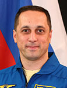

Lyndon B. Johnson Space Center
Houston, Texas 77058
|
National Aeronautics and Space Administration Lyndon B. Johnson Space Center Houston, Texas 77058 |
 |
Biographical Data |
||
ANTON NIKOLAEVICH SHKAPLEROV
(COLONEL, RUSSIAN AIR FORCE)
Test Cosmonaut
YU. A. GAGARIN COSMONAUT TRAINING CENTER
PERSONAL DATA: Born February 20, 1972, in Sevastopol. His parents, Nikolay Ivanovich Shkaplerov and Tamara Viktorovna Shkaplerova, reside in Sevastopol, in the Crimea. Anton is married to Tatyana Petrovna, and they have two daughters named Kristina and Kira. His hobbies include sports, travel, fishing and golf.
EDUCATION: Shkaplerov completed Yak-52 flight training at the Sevastopol Aviation Club in 1989. After graduation from Sevastopol High School in 1989, he entered the Kachinsk Air Force Pilot School graduating in 1994 as pilot-engineer. He graduated from the N. E. Zukovskiy Air Force Engineering in 1997.
EXPERIENCE: After graduation from the academy he served as a senior pilot-instructor in the Russian Air Force. He flew 3 different types of aircraft: Yak-52, L-29 and MiG-29. He is a Class 2 Air Force pilot-instructor. He is also an Instructor of General Parachute Training, and has performed more than 300 parachute jumps.
Shkaplerov was selected as a test-cosmonaut candidate of the Gagarin Cosmonaut Training Center Cosmonaut Office in May 2003. From June 2003 to June 2005 he attended basic space training. In 2005 Shkaplerov was qualified as a test cosmonaut.
From April-October 2007, Shkaplerov served as Director of Operations, Russian Space Agency, stationed at the Johnson Space Center in Houston, Texas.
Anton is currently assigned as a back-up commander for Expedition 22.
JULY 2011
{kind=link}